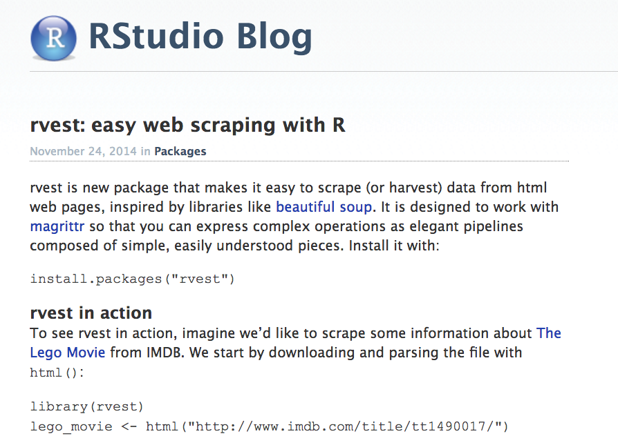
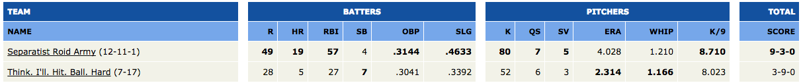
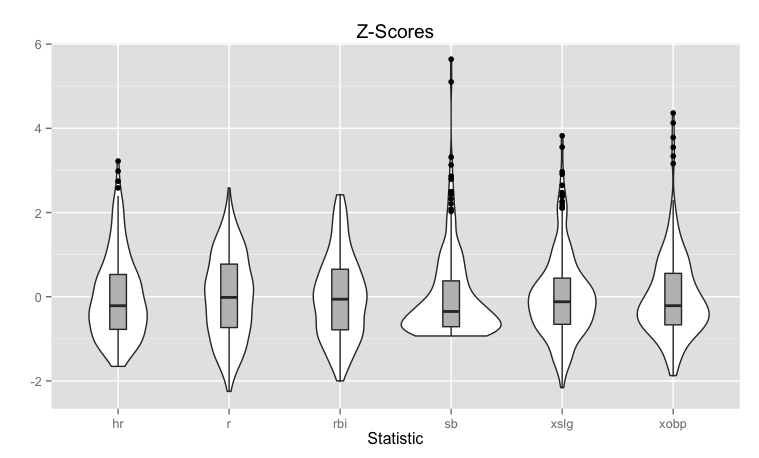
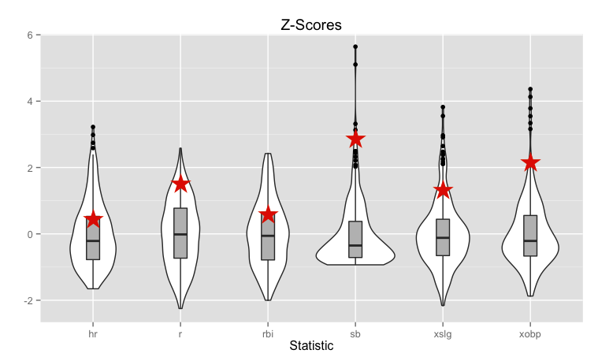
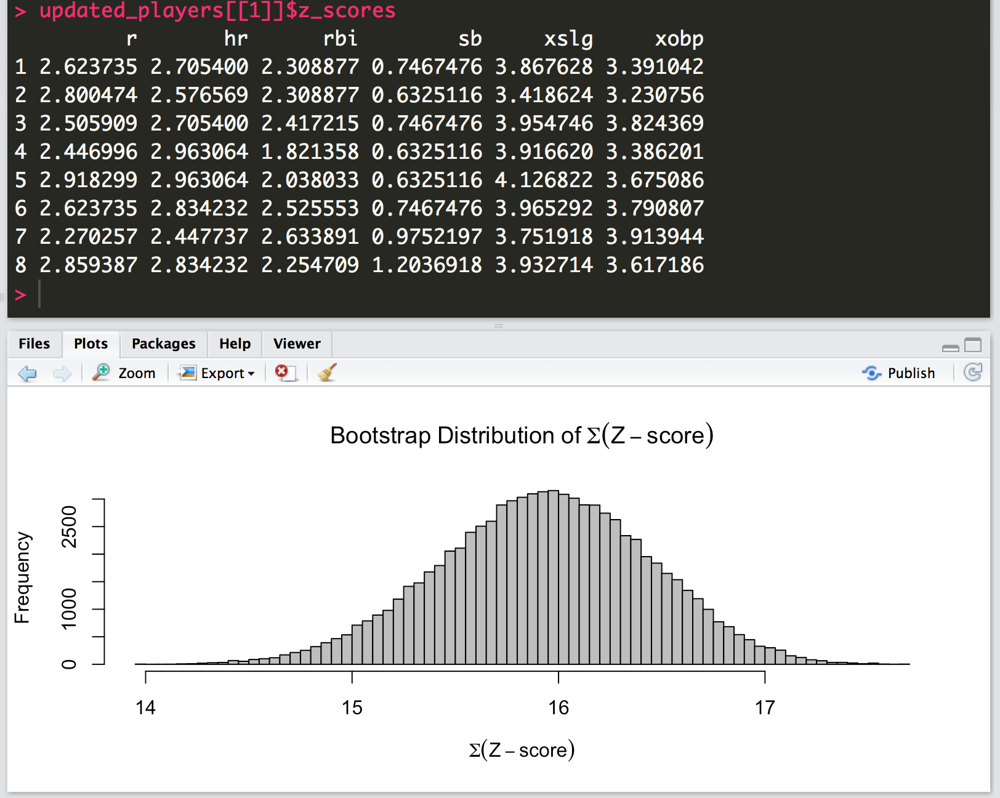
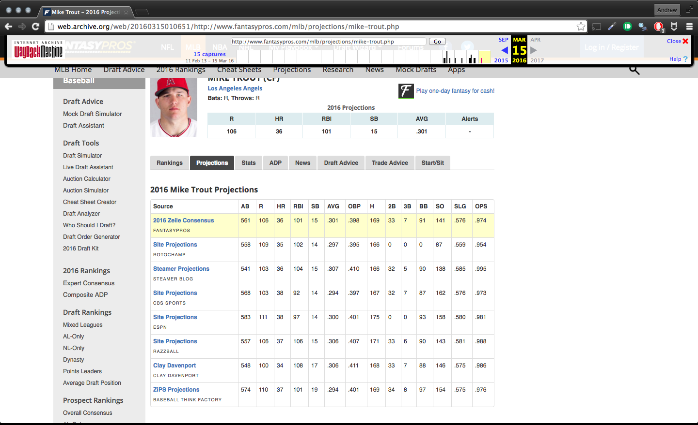

- Why web scraping?
- Web scraping in
R - Use case: Fantasy Baseball Analytics
April 19, 2016
Overview
Why web scraping?
All starts with an idea…
So you search for some data
And you (almost) never find this…

If you're lucky…
- Someone has done the hard work for you
- Data is available in aggregated format (text file, DB, etc.)
- Or can be accessed via a standardized API
But what if you aren't lucky?

Web scraping in R
Many approaches, we'll use rvest

Dummy Example
library(rvest)
# Store web url
lego_movie <- read_html("http://www.imdb.com/title/tt1490017/")
#Scrape the website for the movie rating
rating <- lego_movie %>%
html_nodes("strong span") %>%
html_text() %>%
as.numeric()
rating
## [1] 7.8
Chrome Developer Tools - Your New Best Friend
This is how to figure out what to put in html_nodes!

Dummy Example - Continued
# Scrape the website for the cast
cast <- lego_movie %>%
html_nodes("#titleCast > table") %>%
html_table()
cast
## [[1]] ## X1 X2 ## 1 Cast overview, first billed only: Cast overview, first billed only: ## 2 Will Arnett ## 3 Elizabeth Banks ## 4 Craig Berry ## 5 Alison Brie ## 6 David Burrows ## 7 Anthony Daniels ## 8 Charlie Day ## 9 Amanda Farinos ## 10 Keith Ferguson ## 11 Will Ferrell ## 12 Will Forte ## 13 Dave Franco ## 14 Morgan Freeman ## 15 Todd Hansen ## 16 Jonah Hill ## X3 ## 1 Cast overview, first billed only: ## 2 ... ## 3 ... ## 4 ... ## 5 ... ## 6 ... ## 7 ... ## 8 ... ## 9 ... ## 10 ... ## 11 ... ## 12 ... ## 13 ... ## 14 ... ## 15 ... ## 16 ... ## X4 ## 1 Cast overview, first billed only: ## 2 Batman / \n Bruce Wayne \n \n \n (voice) ## 3 Wyldstyle / \n Lucy \n \n \n (voice) ## 4 Blake / \n Additional Voices \n \n \n (voice) ## 5 Unikitty \n \n \n (voice) ## 6 Octan Robot / \n Additional Voices \n \n \n (voice) ## 7 C-3PO \n \n \n (voice) ## 8 Benny \n \n \n (voice) ## 9 Mom \n \n \n (voice) ## 10 Han Solo \n \n \n (voice) ## 11 Lord Business (voice) / \n President Business (voice) / \n The Man Upstairs ## 12 Abraham Lincoln \n \n \n (voice) (as Orville Forte) ## 13 Wally \n \n \n (voice) ## 14 Vitruvius \n \n \n (voice) ## 15 Gandalf / \n Additional Voices \n \n \n (voice) ## 16 Green Lantern \n \n \n (voice)
Use case: Fantasy Baseball
What is Fantasy Baseball?
- 10 teams draft 26 MLB players to create teams
- each player can only be on 1 team
- teams compete against one another in head-to-head match-ups each week
- scores are determined based on players performances in different statistical categories during that week

What is Fantasy Baseball?
- 10 teams draft 26 MLB players to create teams (player can only be on 1 team)
- teams compete against one another in head-to-head match-ups each week
- scores are determined based on players performances in different statistical categories during that week
Question: How can we use R to help us win our league!?
Fantasy Baseball Analytics
- With analytics, of course!
- Scrape multiple statistical projections for each player
- Goal: Compute value for each player while accounting for variability in projections

Estimating Value - Z-Score Approach
Step 1: Compute z-scores of statistics for all players

Estimating Value - Z-Score Approach
Step 2: Compute value as sum of z-scores for each statistic

Estimating Value - Z-Score Approach
Step 3: Compute player value over replacement (VORP) for each position

Estimating Value - Z-Score Extension
Step 4: Estimate uncertainty using bootstrapping approach

Source of Projections
See an example of the data we want to pull here

Figuring out Our URL Pattern
http://www.fantasypros.com/mlb/projections/mike-trout.phphttp://www.fantasypros.com/mlb/projections/bryce-harper.phphttp://www.fantasypros.com/mlb/projections/FIRSTNAME-LASTNAME.php
Getting first and last names for all players
- Use overall projections to obtain player names)
u <- 'http://www.fantasypros.com/mlb/rankings/overall.php'
fp_overall <- u %>%
read_html() %>%
html_nodes('.mobile-table .table') %>%
html_table() %>%
first
Scraping All Projections
# scrape all the available projections for each player
proj <- lapply(1:nrow(fp_overall), function(i) {
parsed_name <- parse_name(fp_overall$player[i]) # https://github.com/hrbrmstr/humanparser
print(parsed_name$fullName)
tryCatch(
expr = {
sprintf('http://www.fantasypros.com/mlb/projections/%s-%s.php',
tolower(gsub("\\.|\\'", '', parsed_name$firstName)),
tolower(parsed_name$lastName)) %>%
read_html() %>%
html_nodes('.mobile-table .table') %>%
html_table() %>%
first
},
error = function(e) return(NULL)
)
})
The Final Product